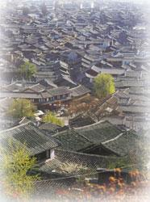

| 雄峰俊岭 | 滔滔大河 | 都市盛景 | 互动 | |||||
|
丽江位于云南省西北部，是纳西族人民聚居的地方。丽江县城大研古镇，即丽江古城，位于丽江北玉龙雪山下，始建于宋代，距今已有近800年的历史。占地1.5平方公里，以四方街为中心，整体原貌保存完整。其建筑融汇了白族和汉族的建筑特色。形成了纳西族轻灵飘逸的独特风格，充满了浓厚的民族文化气息。 古城北依象山，西枕狮山，不筑城墙。清澈的玉泉水分东、西、中三股流入城中，又分无数支流，绕街究镇，入墙过屋，淌遍小街窄巷，形成"家家泉水，户户垂柳"的宜人景象。  古城石桥密布，大街小巷路面用彩花石铺成。城中房舍多为三坊一照壁，也有不少四合院，院内种花植树，更显古雅秀丽，素有"丽郡从来喜植树，山城无处不养花"之称。在城中游览，所见尽是明清文物，令人充满怀古之幽情。丽江古城于1997年被联合国教科文组织列入世界文化遗产名录。 |
||||